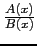
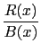

suivant: Décomposition en éléments simples
monter: Les fractions rationnelles
précédent: Réduire au même dénominateur
Table des matières
Index
Partie entière et fractionnaire : propfrac
propfrac a comme argument une fraction rationnelle.
propfrac renvoie cette fraction rationnelle écrite de manière à mettre en évidence sa partie entière.
propfrac(A(x)/B(x)) écrit la fraction rationnelle
 après simplification sous la
forme :
Q(x) + 
avec R(x) = 0 ou
0  degree(R(x)) < degree(B(x)).
degree(R(x)) < degree(B(x)).
On tape :
propfrac((5*x+3)*(x-1)/(x+2))
On obtient :
5*x-12+21/(x+2)
Documentation de giac écrite par Renée De Graeve